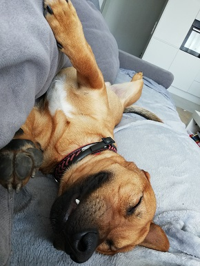

Lucjusz : "W poszukiwaniu szczęścią najważniejsze jest mieć przy tym jaja"
Każdego dnia staraj się robić coś nowego. Ja np. staram się leżeć w różnych miejscach i w różnych pozycjach... Pamiętaj! Każda pora jest dobra do leżenia! Czasem nawet jestem tak tym zachwycony, że leżę przy lustrze, żeby patrzeć czy na pewno jestem na pełnej wyjebce...